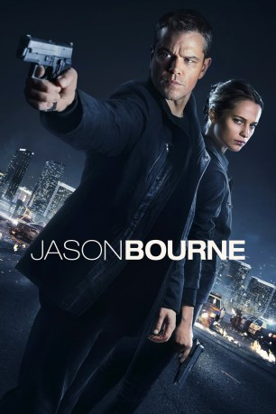

#4828 Bourne 5 - Jason Bourne
 gesehen am 22.12.2016
gesehen am 22.12.2016
 
 IMDB-Wertung: 6.8 / 10
IMDB-Wertung: 6.8 / 10  Metascore: 0
Metascore: 0 
Nachdem Jason Bourne in den vorangegangenen drei Teilen nicht nur sein Gedächtnis, sondern auch seine Freundin verloren hat und einen eigenen Feldzug gegen die ihn jagende CIA antrat, um endlich hinter das Geheimnis seiner Vergangenheit zu gelangen, ist er mithilfe von Nicki Parsons untergetaucht. Doch das Leben eines auf der Flucht lebenden Agenten mit besonders modifizierten Fähigkeiten, kann nie lange ruhig bleiben. Denn inzwischen weiss Jason Bourne zwar, wer er ist, aber nicht, was diejenigen, die ihn erschaffen hatten, mit ihm vorhatten. Also versucht er - verfolgt von der CIA die versteckten Wahrheiten in seiner Vergangenheit zu finden.
Jahr: 2016
Dauer: 123 Minuten
FSK: 16
Land: England Studio: UPITonspuren: DTS - ,
Untertitel: Deutsch,
Auflösung: 1080p (1920x808) Größe: 8581 MB
Genre: Action, Thriller
Regisseur: Paul Greengrass
Drehbuch: Vera Blasi
Soundtrack:
Darsteller:
 Matt Damon als Jason Bourne
Matt Damon als Jason Bourne Tommy Lee Jones als CIA Director Robert Dewey
Tommy Lee Jones als CIA Director Robert Dewey Alicia Vikander als Heather Lee
Alicia Vikander als Heather Lee Vincent Cassel als Asset
Vincent Cassel als Asset Julia Stiles als Nicky Parsons
Julia Stiles als Nicky Parsons Riz Ahmed als Aaron Kalloor
Riz Ahmed als Aaron Kalloor Ato Essandoh als Craig Jeffers
Ato Essandoh als Craig Jeffers Scott Shepherd als Director NI Edwin Russell
Scott Shepherd als Director NI Edwin Russell Bill Camp als Malcolm Smith
Bill Camp als Malcolm Smith Vinzenz Kiefer als Christian Dassault
Vinzenz Kiefer als Christian Dassault Stephen Kunken als Baumen
Stephen Kunken als Baumen- Ben Stylianou als Greek Van Driver
- Kaya Yuzuki als Hacker
- Matthew O'Neill als Lead Hub Tech
- Paris Stangl als Athens Alpha Agent
- Amy De Bhrún als Hub Tech
 Akie Kotabe als Hub Tech
Akie Kotabe als Hub Tech- Miguel Alves-Khan als Athens Bravo Agent
 Gregg Henry als Richard Webb
Gregg Henry als Richard Webb Robert Stanton als Government Lawyer
Robert Stanton als Government Lawyer- Duran Fulton Brown als London Alpha Agent
- Charles Jarman als London Bravo Agent
- Jay Vincent Diaz als Immigration Officer
- Richard Nunez als CIA Security Detail
- Sonny Robertson als CIA Security Detail
- James Dormuth als CIA Security Detail
- Dexter Emery als CIA Security Detail
 Trevor White als Senior Agent Collier
Trevor White als Senior Agent Collier- Barrie Brown als Las Vegas Police
 Gioacchino Jim Cuffaro als Greek Demostrator
Gioacchino Jim Cuffaro als Greek Demostrator- Sean Moon als Sign Language Interpreter
 Jozef Aoki als Japanese Hacker , uncredited
Jozef Aoki als Japanese Hacker , uncredited- Sarah Armstrong als Tattoo , uncredited
 Lasco Atkins als Conference Attendee , uncredited
Lasco Atkins als Conference Attendee , uncredited- Alphonso Austin als Las Vegas Squatter , uncredited
- Martin Ballantyne als Commuter , uncredited
 Gintare Beinoraviciute als City Worker , uncredited
Gintare Beinoraviciute als City Worker , uncredited- Tom Bonello als High Roller / Driver , uncredited
- Allen Bracken als Black Tie Guest , uncredited
- Anthony Burkhalter als Traveler , uncredited
 Nicole Chauvet als High Roller / Conventioneer , uncredited
Nicole Chauvet als High Roller / Conventioneer , uncredited- Shin-Fei Chen als Cyber Technician , uncredited
- Constance Consola als ExoCon Vendor / Conventioneer , uncredited
 Alexander Cooper als City Worker , uncredited
Alexander Cooper als City Worker , uncredited Graham Curry als City Worker , uncredited
Graham Curry als City Worker , uncredited- Darlene Dalmaceda als Casino Patron / Pedestrian , uncredited
- Steven I. Dillard als Media Photographer , uncredited
 Nick Donald als Security gaurd , uncredited
Nick Donald als Security gaurd , uncredited Timothy Skyler Dunigan als Cab Driver , uncredited
Timothy Skyler Dunigan als Cab Driver , uncredited Paul Edney als Las Vegas Cab Driver , uncredited
Paul Edney als Las Vegas Cab Driver , uncredited
Datei: X:\5-Pentalogie(A-Z)\Bourne\Bourne 5 - Jason Bourne (2016, FSK16, 1920x808).mkv seit 21.11.2016
Festplatte: HD Collection-3(N-Z)-6(A-Z)
 Es gibt insgesamt 8 Filme in der Gruppe '5-Pentalogie(A-Z)\Bourne'
Es gibt insgesamt 8 Filme in der Gruppe '5-Pentalogie(A-Z)\Bourne'